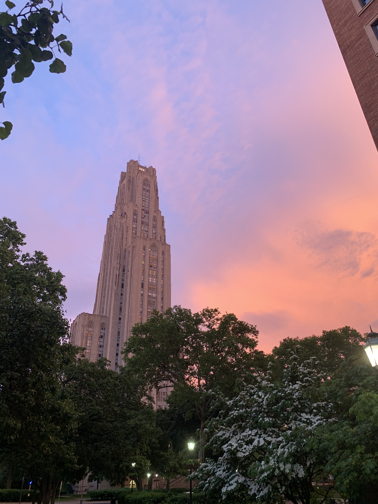
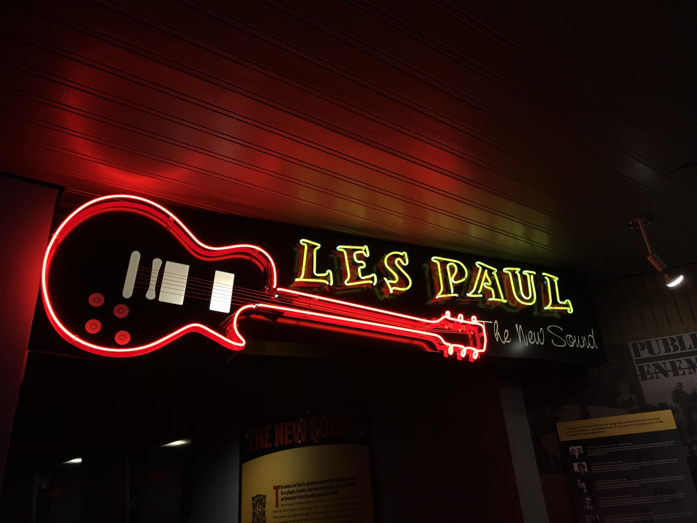
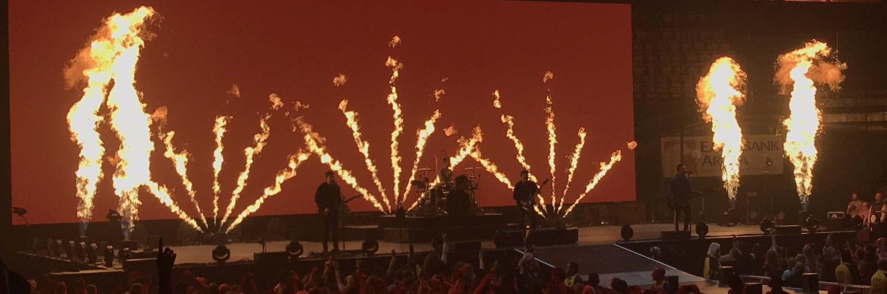

Photography
Nature Photography

This is a photo I took in the Outer Banks, NC at sunrise the day I was leaving to go back home. I typically don't take photos of sunrises (usually because I'm rarely up that early), but I'm glad I was up for this one because it was beautiful.

This photo was taken at Burke Lake Park in Fairfax, VA. The sunset this day was beautiful and I was so glad my friend and I decided to go there and take photos at sunset. Burke Lake Park is super peaceful and is always just a beautiful place to be.

I took this photo while hiking in the Rocky Mountains in Colorado on a spring break trip. Rocky Mountain National Park is extremely beautiful, and this photo doesn't even do it justice. This trip was super fun overall, but hiking in the Rockies was definitely one of my favorite things we did.
This is one of my favorite photos that I've taken of the Cathedral of Learning at the University of Pittsburgh. This photo, taken at sunset, is just so beautiful, and the way that the trees frame the building is just so perfect in my eyes.
Other Photography

This is a photo I took of the Steel Curtain rollercoaster at Kennywood Park in West Mifflin, PA. I like this photo a lot because of the way the sun is backlighting the rollercoaster, making there be a shadowy effect, but you can still see the colors of the rollercoaster as opposed to it being a complete sillhouete.
This photo was taken at the Rock n Roll Hall of Fame in Cleveland, Ohio. I just really liked the way the lights popped in this photo. To get that I had to slightly lower the exposure of the photo so that the rest of the photo would be darker and the neon lights would be exaggerated.

I took this photo at a Blackbear concert while he was opening for Fall Out Boy. I greatly enjoy taking photos at concerts so I can remember the experience, and this photo just turned out incredible. For this one I also slighlty lowered the exposure so that the lights would pop more and the audience would be more muted.


Both of these last two photos were taken at Fall Out Boy concerts; one was in Fairfax, VA and the other in Pittsburgh, PA. Like I said about the Blackbear photo, I love taking photos at concerts, and since Fall Out Boy is my favorite band I took even more than usual. These two are some of my favorites; the fire during My Songs Know What You Did in the Dark is always amazing to look at at every show, and the fireworks lighting up the runway just looked so cool.